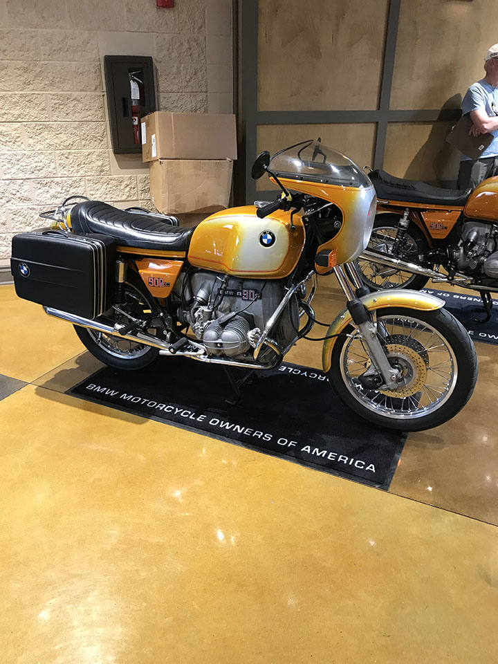

The /5 series of bikes were quite popular. Between 1969 and 1974 they sold over 500,000 /5 motorcycles. What they needed was something even better. They started by getting rid of the R50. Now the models were the R60, R75, and R90, with a whopping 900cc engine. They also produced a specialty model, the 90S (right). The R90 was a quantum leap compared to the R75, with the 90/6 producing 60HP, and the 90S producing 67HP. The 90S is considered to be the first superbike. Like the /5 bikes, they had rear drum breaks, but up front they sported a single disc brake and 32mm Bing CV carberators. The 90S models had 2 front disc brakes and 2 Del Orto slide carberators, the same brand used by Ducati for racing. The 90S model would go on to make a big splash on the racing circuit, quickly gaining BMW a reputation as a motorcycle racing powerhouse.